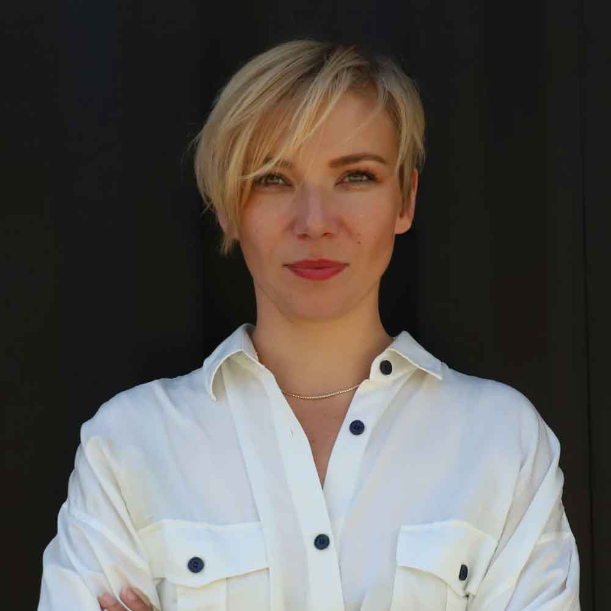
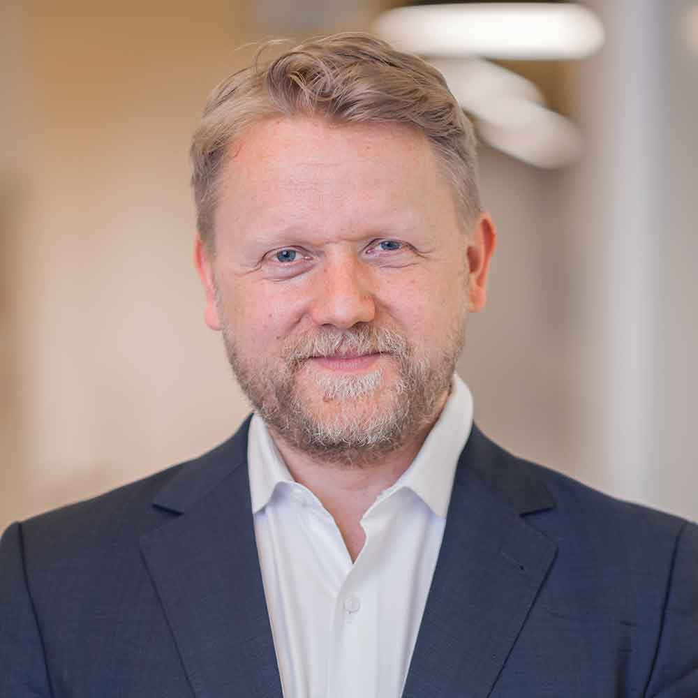
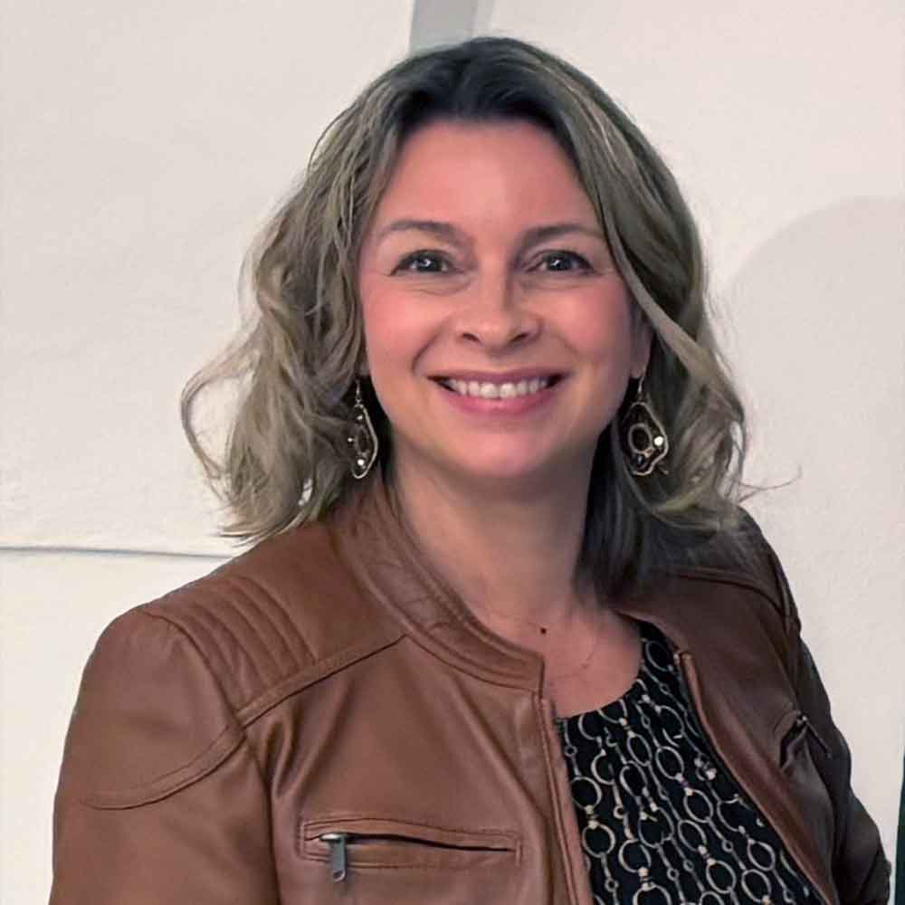
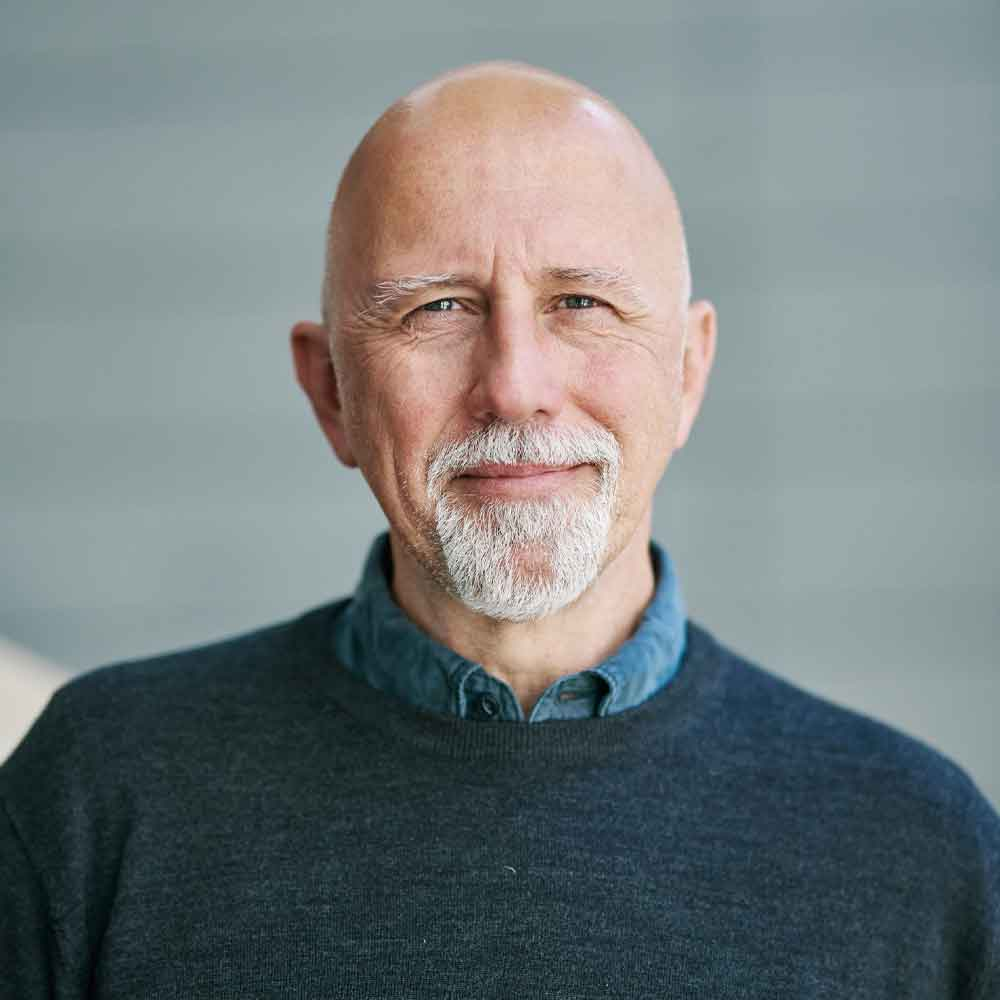
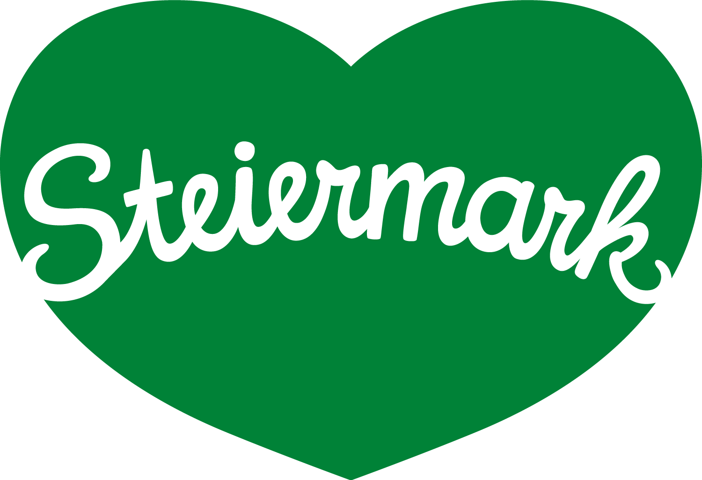
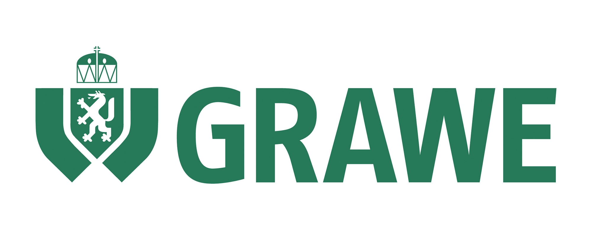
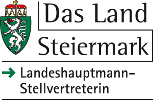

Lokale Berichterstattung
Der Beitrag befasst sich mit lokal relevanten Themen aus der Steiermark.
Preisgeld: 1.000 Euro.
Der Steirische Presseclub schreibt gemeinsam mit dem Institut für Journalismus und Digitale Medien der FH JOANNEUM und der Österreichischen Medienakademie 2026 erstmals den steirischen Preis für Lokaljournalismus „Nah dran“ aus.
Der Steirische Presseclub schreibt gemeinsam mit der Fachhochschule JOANNEUM und der Österreichischen Medienakademie 2026 erstmals den steirischen Preis für Lokaljournalismus „Nah dran“ aus. Ziel ist es, herausragende journalistische Arbeiten mit Steiermarkbezug zu würdigen. Besonderes Augenmerk wird dabei auf hohe Qualität, Relevanz und Verantwortung gelegt. Der Preis soll sichtbar machen, wie wichtig professioneller Lokaljournalismus für demokratische Meinungsbildung, gesellschaftlichen Zusammenhalt und für die regionale Identität der Steiermark ist. Gleichzeitig versteht sich der Preis als Brücke zwischen Ausbildung, Praxis und Nachwuchsförderung.
zurückDer Beitrag befasst sich mit lokal relevanten Themen aus der Steiermark.
Preisgeld: 1.000 Euro.
Der Beitrag beschäftigt sich mit einem für die Steiermark relevanten Wirtschaftsthema.
Preisgeld: 1.000 Euro.
Einreichen dürfen junge Journalist*innen bis zum vollendeten 25. Lebensjahr, die bereits Beiträge in Medien veröffentlicht haben.
Preisgeld: 500 Euro + 500 Euro Bildungsscheck, einlösbar bei der Österreichischen Medienakademie.
Sie haben einen Beitrag gestaltet, der den Steirischen Lokaljournalismus-Preis verdient? Dann reichen Sie ihn bitte hier bis zum 18. September 2026 ein. Später eingesendete Beiträge können ebensowenig berücksichtigt werden wie unvollständige Einreichungen. Die Beiträge werden von einer renommierten Jury bewertet. Die Preisverleihung findet am 26. November in der Fachhochschule JOANNEUM statt.
Die Jury setzt sich aus Expert*innen aus der heimischen Medienbranche zusammen. Dazu gehören: Alexandra Folwarski, Jürgen Hofer, Nikolaus Koller, Paul Koren, Alexandra Reischl und Thomas Wolkinger.

Alexandra Folwarski ist Gründerin und Geschäftsführerin der Flâneur Media und Herausgeberin des lokaljournalistischen Formats Wiener Flâneur. Sie leitete das Media Innovation Lab der Wiener Zeitung GmbH und war Dozentin an der FH Wien der WKW und am FJUM. Sie unterstützt junge Medienmacher*innen und Media-Tech-Startups dabei, ihre Projekte unabhängig zu entwickeln und langfristig tragfähig zu machen.
Mit über einem Jahrzehnt Erfahrung im Bereich Medienmanagement gestaltet und steuert Jürgen Hofer die strategische, konzeptionelle und vermarktungstechnische Ausrichtung aller Marken, Produkte und Events der HORIZONT-Gruppe, die Printpublikationen, digitale Angebote und Services und Events wie die Österreichischen Medientage umfasst. Nach seinem Einstieg beim Manstein Verlag im Jahr 2016 war er zunächst als stellvertretender Chefredakteur aktiv und hat ab 2019 fast sechs Jahre lang die Chefredaktion von HORIZONT Österreich verantwortet. (Foto: Sabine Klimpt)

Nikolaus Koller leitet seit 2018 die Österreichische Medienakademie – Ausbildungsinstitut für Journalistinnen und Journalisten. Zuvor war er als Studiengangs- und Institutsleiter an der FH Wien der WKW tätig. Seine berufliche Laufbahn begann er als Journalist bei der Tageszeitung DIE PRESSE. (Foto: Alexander Müller)
Paul Koren, 25, ist freier Journalist und schreibt für das DATUM Monatsmagazin hauptsächlich über Klima- und Umweltthemen. Nach dem Abschluss des Studiums Journalismus & Public Relations an der FH Joanneum in Graz, studiert er Informatik und arbeitet nun in Wien. Er hat den Podcast „GrazNost“ für die Kleine Zeitung, die Social Media Video-Serie „Inside Ibiza“ für WZ.at, sowie zuletzt den Podcast „Kniefall – Die Radikalisierung der Karin Kneissl" mitverantwortet. (Foto: Nadine Hermann)

Alexandra Reischl ist seit 25 Jahren in der steirischen Medienbranche tätig. Sie war unter anderem Redakteurin bei der Kleinen Zeitung, der Grazer Woche sowie Chefredakteurin des Magazins "Die Steirerin" und leitete die PR- und Marketingabteilung bei Joanneum Research. Seit 2023 ist sie Geschäftsführerin des Steirischen Presseclubs. (Foto: Steirischer Presseclub)

Thomas Wolkinger, *1968, hat nach einem Studium der Rechtswissenschaften für die Kleine Zeitung erst über Außenpolitik berichtet und dann ab 1997 die erste Online-Redaktion Österreichs aufgebaut. Ab 2005 war er für die Steiermark-Ausgabe des Falter verantwortlich, seit 2011 lehrt und forscht er am Institut für Journalismus und Digitale Medien der FH JOANNEUM. Als freier Journalist hat er zuletzt mehrfach für den Falter aus der Ukraine berichtet. (Foto: FH/René Böhmer)
zurückDas Institut für Journalismus und Digitale Medien der FH JOANNEUM steht für hochwertige, praxisnahe Ausbildung und exzellente Forschung in den Bereichen Journalismus, professionelle Kommunikation und Media Literacy.
Der Steirische Presseclub versteht sich seit 1986 als unabhängiges Forum für Kommunikation und Vernetzung. Seine Partner*innen sind öffentliche Institutionen sowie Unternehmen, die Vereinsmitglieder sind Persönlichkeiten aus der Medienszene.
Die Österreichische Medienakademie – Ausbildungsinstitut für Journalistinnen und Journalisten macht „guten Journalismus besser“: Es werden national und international Schulungen und Trainings für Medienschaffende konzipiert und durchgeführt.


